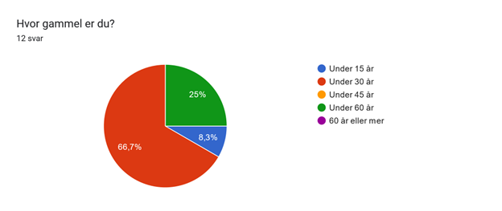
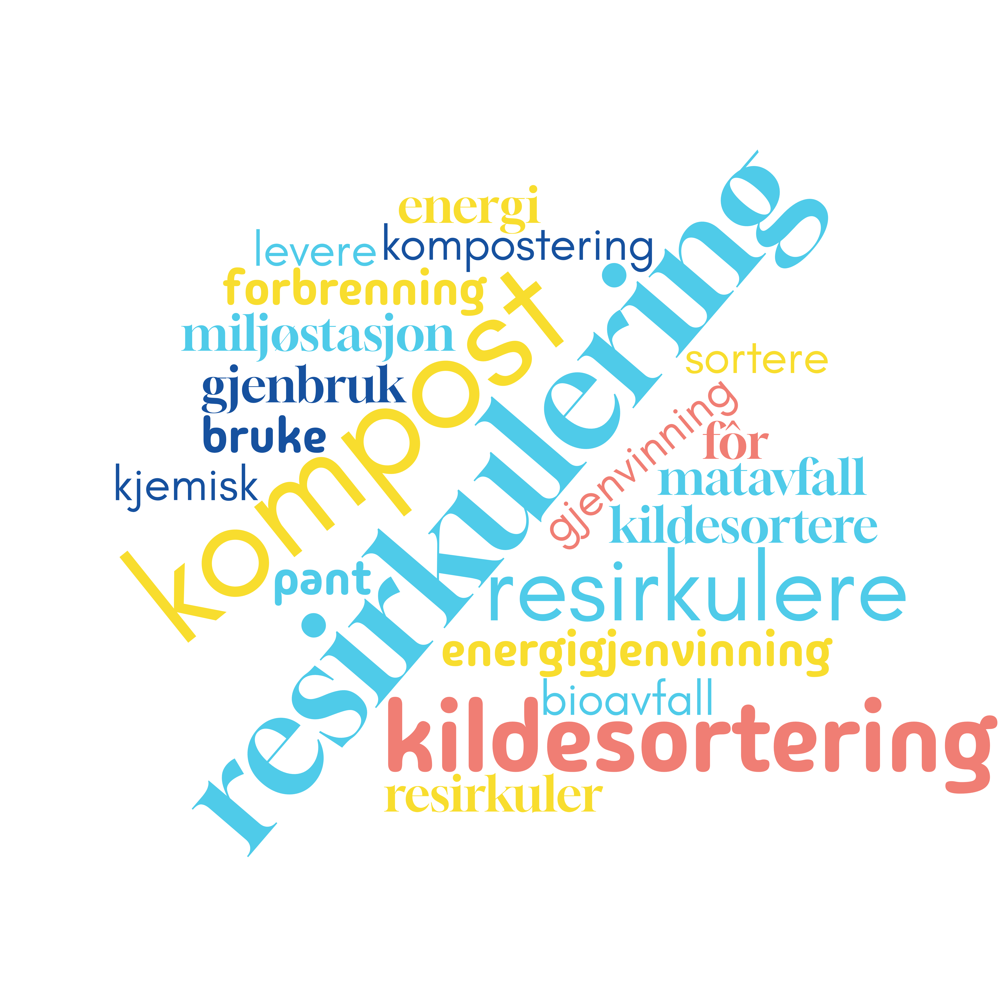
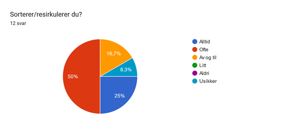
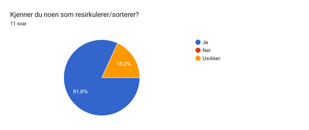
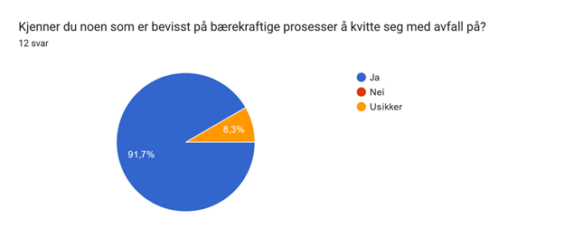
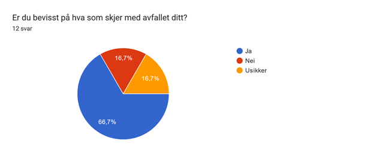
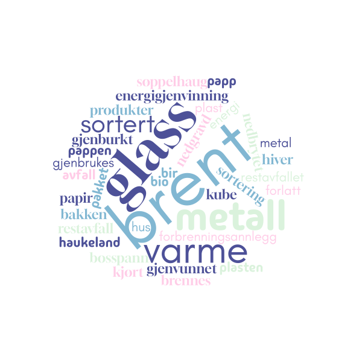

Jeg har laget en ordsky av alle svarene på denne oppgaven. Ordskyen visser ordene større jo flere flere ganger de er skrevet.(Jeg har tatt ut alle ord som ikke var relevant til temaet f.eks. "den", "det", "jeg")





Her har jeg gjort det samme som jeg gjorde på ordskyen i oppgave 2.
